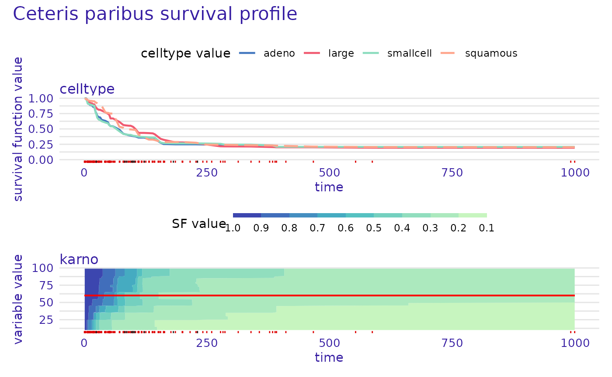
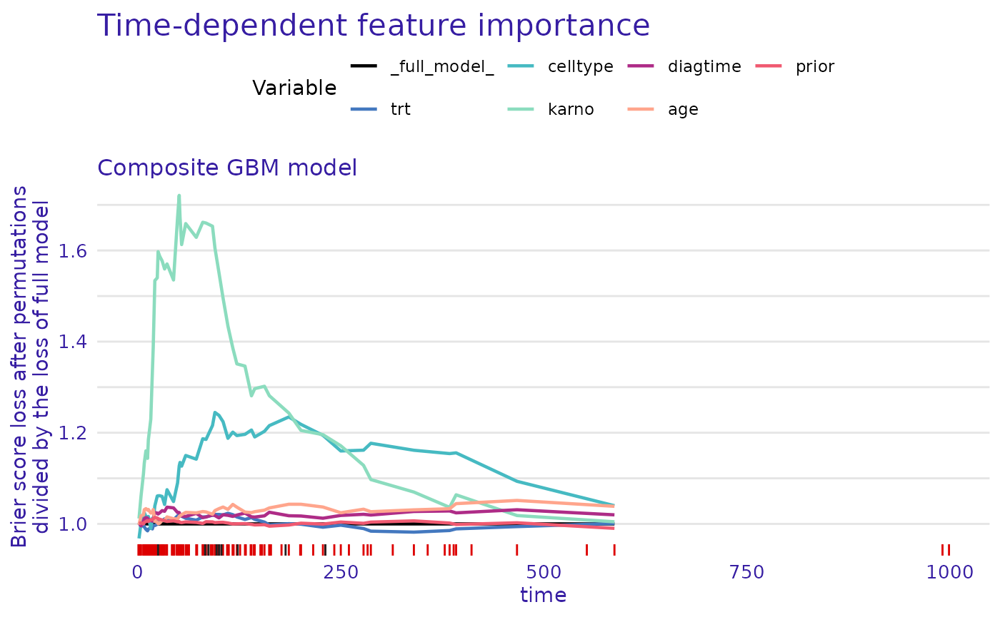
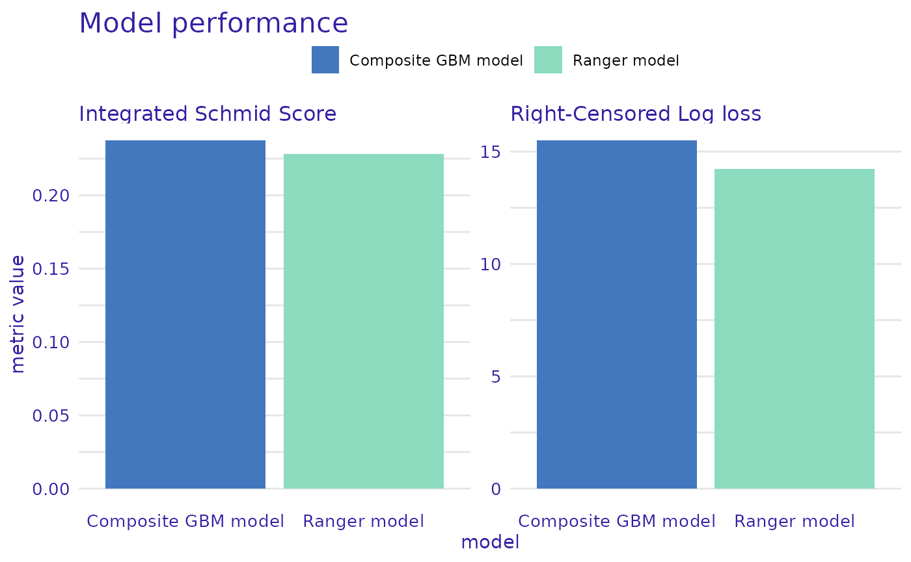

mlr3proba and additional packages
The mlr3proba package maintainers state that
mlr3proba is not on CRAN and is unlikely to be reuploaded (see here for reasons).
For this reason, the installation of this package may be not obvious. The following chunk loads all required packages for this vignette.
if (!require("ooplah")) install.packages("ooplah")
#> Warning in library(package, lib.loc = lib.loc, character.only = TRUE,
#> logical.return = TRUE, : there is no package called 'ooplah'
if (!require("dictionar6")) install.packages("dictionar6")
#> Warning in library(package, lib.loc = lib.loc, character.only = TRUE,
#> logical.return = TRUE, : there is no package called 'dictionar6'
if (!require("set6")) install.packages("set6",
repos = "https://mlr-org.r-universe.dev")
#> Warning in library(package, lib.loc = lib.loc, character.only = TRUE,
#> logical.return = TRUE, : there is no package called 'set6'
if (!require("param6")) install.packages("param6",
repos = "https://mlr-org.r-universe.dev")
#> Warning in library(package, lib.loc = lib.loc, character.only = TRUE,
#> logical.return = TRUE, : there is no package called 'param6'
if (!require("distr6")) install.packages("distr6",
repos = "https://mlr-org.r-universe.dev")
#> Warning in library(package, lib.loc = lib.loc, character.only = TRUE,
#> logical.return = TRUE, : there is no package called 'distr6'
if (!require("mlr3")) install.packages("mlr3")
#> Warning in library(package, lib.loc = lib.loc, character.only = TRUE,
#> logical.return = TRUE, : there is no package called 'mlr3'
if (!require("mlr3proba")) install.packages("mlr3proba",
repos = "https://mlr-org.r-universe.dev")
#> Warning in library(package, lib.loc = lib.loc, character.only = TRUE,
#> logical.return = TRUE, : there is no package called 'mlr3proba'
if (!require("mlr3extralearners")) install.packages("mlr3extralearners",
repos = "https://mlr-org.r-universe.dev")
#> Warning in library(package, lib.loc = lib.loc, character.only = TRUE,
#> logical.return = TRUE, : there is no package called 'mlr3extralearners'
if (!require("mlr3pipelines")) install.packages("mlr3pipelines")
#> Warning in library(package, lib.loc = lib.loc, character.only = TRUE,
#> logical.return = TRUE, : there is no package called 'mlr3pipelines'
library(mlr3proba)
library(mlr3extralearners)
library(mlr3pipelines)
library(survex)
library(survival)Creating an explainer for mlr3proba learner
survex allows for the creation of explainers for
mlr3proba::LearnerSurv() objects in the following way:
veteran_task <- as_task_surv(veteran,
time = "time",
event = "status",
type = "right")
ranger_learner <- lrn("surv.ranger")
ranger_learner$train(veteran_task)
ranger_learner_explainer <- explain(ranger_learner,
data = veteran[, -c(3,4)],
y = Surv(veteran$time, veteran$status),
label = "Ranger model")
#> Preparation of a new explainer is initiated
#> -> model label : Ranger model
#> -> data : 137 rows 6 cols
#> -> target variable : 137 values ( 128 events and 9 censored )
#> -> times : 94 unique time points , min = 1 , mean = 119.9706 , max = 845.56
#> -> times : ( generated from y with method quantiles )
#> -> predict function : predict_newdata()$crank will be used ( default )
#> -> predict survival function : predict_newdata()$distr$survival will be used ( default )
#> -> predict cumulative hazard function : predict_newdata()$distr$cumHazard will be used ( default )
#> -> model_info : package mlr3proba , ver. 0.4.16 , task survival ( default )
#> A new explainer has been created!Example explanation
The created explainer can be easily used for providing explanations.
ranger_learner_explainer |> predict_profile(veteran[1,]) |> plot(numerical_plot_type = "contours",
variables = c("karno", "celltype"),
facet_ncol = 1,
subtitle = NULL)
Creating explainer for learner with composed distribution prediction
Not all models can predict the survival distribution
(distr predict type), however they can be combined with
baseline survival distribution estimator to create composite models.
Such models created using the distrcompositor() pipeline
can also be explained easily. There is one caveat, as the pipeline
strips the LearnerSurv() class, it has to be added again
manually.
gbm_composite_learner <- as_learner(ppl(
"distrcompositor",
learner = lrn("surv.gbm"),
estimator = "kaplan",
form = "ph"
))
gbm_composite_learner$train(veteran_task)
# important!
class(gbm_composite_learner) <- c(class(gbm_composite_learner), "LearnerSurv")
gbm_composite_learner_explainer <- explain(gbm_composite_learner,
data = veteran[, -c(3,4)],
y = Surv(veteran$time, veteran$status),
label = "Composite GBM model")
#> Preparation of a new explainer is initiated
#> -> model label : Composite GBM model
#> -> data : 137 rows 6 cols
#> -> target variable : 137 values ( 128 events and 9 censored )
#> -> times : 94 unique time points , min = 1 , mean = 119.9706 , max = 845.56
#> -> times : ( generated from y with method quantiles )
#> -> predict function : predict_newdata()$crank will be used ( default )
#> -> predict survival function : predict_newdata()$distr$survival will be used ( default )
#> -> predict cumulative hazard function : predict_newdata()$distr$cumHazard will be used ( default )
#> -> model_info : package mlr3proba , ver. 0.4.16 , task survival ( default )
#> A new explainer has been created!
gbm_composite_learner_explainer |> model_parts(type = "ratio") |> plot(subtitle = NULL)
Using mlr3proba measures
The mlr3proba package provides many additional
performance measures. They can be adapted for use with
survex using the loss_adapt_mlr3proba()
function. These adapted metrics can be used with
model_parts() and model_performance()
functions.
loss_schmid <- loss_adapt_mlr3proba(msr("surv.schmid"))
gbm_composite_learner_explainer |> model_parts(loss = loss_schmid) -> model_part
model_part |> plot(subtitle = NULL)
loss_rcll <- loss_adapt_mlr3proba(msr("surv.rcll"))
custom_metrics <- c("Integrated Schmid Score" = loss_schmid,
"Right-Censored Log loss" = loss_rcll)
perf_ranger <- model_performance(ranger_learner_explainer, metrics=custom_metrics)
perf_comp_gbm <- model_performance(gbm_composite_learner_explainer, metrics=custom_metrics)
plot(perf_ranger, perf_comp_gbm, metrics_type="scalar", subtitle = NULL)